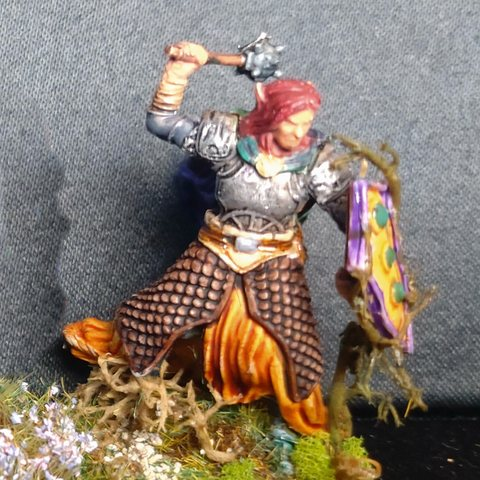
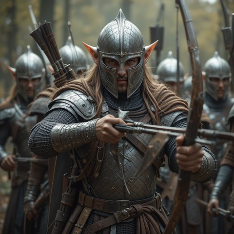

Personnages
Les héros
📜 Ouvrir les fiches des personnages joueurs (Google Sheets)


Personnages contemporains
 Le Voïvode Brancovan de Rourika
Le Voïvode Brancovan de Rourika
19 mentions Kila Mille-Peaux (et le dragon Aldryx)
Kila Mille-Peaux (et le dragon Aldryx)
18 mentions
Wayland, le dieu forgeron
16 mentions Le démon Epharel
Le démon Epharel
16 mentions La Révérende Mère Alba, la sorcière immortelle de la fête
La Révérende Mère Alba, la sorcière immortelle de la fête
12 mentions Gareth et Mélisande
Gareth et Mélisande
11 mentions- Spada Rapazzoni
9 mentions  Ochlus, le dieu de la poésie
Ochlus, le dieu de la poésie
7 mentions Basilio Smemorato, le magicien de la fête
Basilio Smemorato, le magicien de la fête
6 mentions Bort
Bort
6 mentions Alistair, intendant de Garches
Alistair, intendant de Garches
6 mentions- Kylima, la déesse des plantes et des bêtes
5 mentions - Rosso Dagarella (alias « Bianco Salvatore »)
4 mentions - Le sénateur Guido Rapazzoni
3 mentions - Melanchter, capitaine de Bourg-Preux
3 mentions  Skirfir Rognellard
Skirfir Rognellard
3 mentions Pekko
Pekko
2 mentions Le Bailli Grugeot Papelin
Le Bailli Grugeot Papelin
2 mentions Madame Vespa
Madame Vespa
2 mentions La grosse Lulette, tenancière de la Couronne Brisée
La grosse Lulette, tenancière de la Couronne Brisée
1 mention- Eirin Main d'Argent, le fêtard de Bourg-Preux
1 mention - Frappe-Lune
1 mention  La Lissandière
La Lissandière
1 mention- Le Maistre de Bourg-Preux
1 mention  Le duc Ganelon de Bromaël
Le duc Ganelon de Bromaël
1 mention Arioald, l'embaumeur
Arioald, l'embaumeur
0 mention Beppo Soderini, marchand d'épices
Beppo Soderini, marchand d'épices
0 mention Borel l'Écumeur, flibustier
Borel l'Écumeur, flibustier
0 mention Bède Locutor
Bède Locutor
0 mention Carognet, rat-garou
Carognet, rat-garou
0 mention Chicot l'Ébréché et ses tire-laine
Chicot l'Ébréché et ses tire-laine
0 mention Ebles Warnachaire, prévôt des marchands
Ebles Warnachaire, prévôt des marchands
0 mention Grindion Pesot, changeur
Grindion Pesot, changeur
0 mention- Le baron Ivor de Kaerlund
0 mention  Le centenier Gaidéris
Le centenier Gaidéris
0 mention Les gardes de Brancovan : Akaki, Micha et Svern
Les gardes de Brancovan : Akaki, Micha et Svern
0 mention- Les mercenaires du baron de Kaerlund
0 mention  Musard, rat-garou
Musard, rat-garou
0 mention- Oleg
0 mention  Paterne Flochet, banquier
Paterne Flochet, banquier
0 mention Polia, serveuse de la Couronne Brisée
Polia, serveuse de la Couronne Brisée
0 mention Urion Bravache et ses Écorcheurs
Urion Bravache et ses Écorcheurs
0 mention
Morts durant la campagne
 L'archonte Cloaphilès †
L'archonte Cloaphilès †
26 mentions L'Innommable (l'abbé Théodric Morvain) †
L'Innommable (l'abbé Théodric Morvain) †
15 mentions Silenna, la sorcière rouge †
Silenna, la sorcière rouge †
14 mentions Leodegar VII, le Roi-Idiot †
Leodegar VII, le Roi-Idiot †
7 mentions Nill Huit-Doigts, chef de pillards †
Nill Huit-Doigts, chef de pillards †
0 mention
Personnages historiques
- Leodegar le Resplendissant, fondateur de la Leomance
12 mentions - Offrid de Malvern, duc et allié du Roi-Idiot
4 mentions - Isembard de Garches, duc et grand vassal
3 mentions 
Le prince Ossirian de Valanael
3 mentions- Jurgen de Bromaël, duc et vainqueur de la guerre
2 mentions - Le Grand-Maître Odoacre, chef de l'Ordre du Sacre
2 mentions - Ocann le Dévoreur, prophète du Desséché
2 mentions - Dentelin Muguet, capitaine des archers halflings
1 mention - Jorvard Dent-de-Fer, chef de l'armée naine
1 mention - L'archimage Gilliomer
1 mention - La reine Adrianna de Malvern, mère du Roi-Idiot
1 mention - Leodegar III le Saint, roi de Leomance
1 mention - Maddan IV, le roi étranglé
1 mention - Voder l'Impétueux, chef nain
1 mention - Gislemar, Aignan et Caedmon, les derniers chevaliers du Sacre
0 mention - Le roi Maddan, qui partagea la Leomance
0 mention - Les fondateurs de Kahad-Burg : Aurvang, Gnomær et Eikinn
0 mention